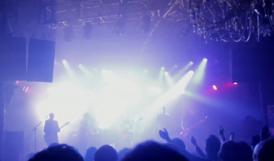

AUDIO E LUCI

La qualità dei suoni è fondamentale in uno spettacolo live professionale: i nostri strumenti musicali sono tra i migliori, nelle versioni piu’ recenti.
Impianto audio
Il nostro impianto audio, composto da mixer Digico / Allen Heath e 13.000 w rms di amplificazione D&B Audiotechnik, ed è dimensionato al meglio per qualità e potenza e funziona in modo ottimale sia per importanti locali che per eventi all’aperto. Due sound engineers dedicati configurano e ottimizzano l’audio e l’illuminazione di tutto lo spettacolo.
L’impianto di amplificazione è di qualità professionale con componenti tipicamente utilizzati in concerti di importanti cantanti e gruppi internazionali, dove la qualità del suono è particolarmente apprezzata.
Collegano due stagebox per il palco, per un totale di 48 canali IN / 14 OUT.
E’ collegato il sistema completo di effetti Waves, già pre programmati sui nostri diversi canali.
L’impianto è adatto, in versione ridotta per ambienti al chiuso ed in versione completa per la maggior parte delle piazze e feste / eventi all’aperto.
Impianto luci
- 40 fari led wash di diverse potenze e caratteristiche
- 16 teste mobili led wash / spot
- 3 macchine del fumo e nebbia
- fari e effetti controllati via DMX e sincronizzabili all’audio / video
Regia video
13 tra telecamere fisse e mobili, insieme a effetti video e sfondi personalizzati, attraverso un mixer video professionale Roland AV, due computer ad alte prestazioni per pilotare il sistema, coordinato in tempo da un nostro regista video e, nei concerti più’ importanti da tre operatori video aggiuntivi.
SCHEDA TECNICA
SimplyJoe – SimplyRock
(7-8 musicisti)
Scheda tecnica
Per ulteriori informazioni: Claudio Pioli – info@simplyjoe.eu - Cellul. +39 345 4593472
L’impianto audio/luci e’ richiesto di buona qualita’ e di potenza adeguata allo spazio nel quale si svolge il concerto. Una nostra verifica tecnica con il service almeno due settimane prima dell’evento, garantisce il migliore risultato.
Nota: in molti casi, in accordo con il service, portiamo direttamente il nostro mixer Digico S21/ Allen Heath SQ6 con stagebox digitali, per un totale di 48 canali in entrata e 14 in uscita, con i nostri suoni già configurati e i nostri microfoni, strumenti, in ear monitors pre-cablati, collegandolo all’impianto di amplificazione del service. Tale soluzione, oltre a migliorare la qualità, velocizza e semplifica il suondcheck e bilancia al meglio i suoni nelle nostre radio-cuffie.
Nel caso con il service non fosse tecnicamente possibile adottare la soluzione sopra indicata, i nostri strumenti/ canali sono i seguenti:
Strumento |
Marca / Modello dei nostri strumenti |
Canali |
Note |
Voce Claudio |
Proprio Radiomicrofono AKG e rack Rupert Neve |
1 XLR |
|
Voce Guest |
Un radiomic di alta qualità |
1 XLR |
|
Voci 2 coriste |
2 Microfoni |
2 XLR |
|
Voce Harmonizer |
1 Microfoni su ns Harmonizer stereo |
2 jack |
|
Tastiere |
Yamaha Montage |
2 Jack |
|
Piano Elettrico |
Roland RD 2000 |
2 XLR |
|
Chitarra Elettrica |
Kemper in diretta stereo e altro canale con mic mono |
3 XLR |
Di volta in volta scegliamo se usare ampli o meno |
Chitarra acustica |
Chitarra Ovation |
1 Jack |
|
Batteria |
Batteria Acustica completa |
9 mic XLR |
|
Basso |
Amp oppure bass DI |
1 XLR |
Da out ampli / DI |
Sax |
Radiomic. ad archetto per sax |
1 XLR |
|
Percussioni |
Varie |
3 XLR |
|
Click e basi |
Nostro Mac PRO Computer – Scheda audio MOTU |
4 Jack |
4 out jack da scheda MOTU |
|
Totale IN | 32 |
|
Uscite (Monitor e IEM):
Strumenti |
N. OUT |
Note |
Voce e Chitarra Claudio |
1 |
Nostro In Ear Monitor |
Guest |
1 |
Nostro In Ear Monitor |
Cori |
1 |
Nostro In Ear Monitor |
Chitarra |
1 |
Monitor (o nostro IEM) |
Tastiere e Piano Elettrico |
1 |
Nostro In Ear Monitor |
Batteria |
2 (click+band) |
Nostro In Ear Monitor |
Sassofono |
1 |
Nostro In Ear Monitor |
Basso |
1 |
Monitor (o nostro IEM) |
Percuss. o Presentatrice |
1 |
Monitor (o nostro IEM) |
| Totale OUT | 10 |
Altri componenti necessari:
- Impianto luci adeguato con scene di effetto e fari, teste mobili, macchine nebbia ecc.
- Mini palco 2x2 per batteria.
- Americana sul retro, sulla quale fissare un nostro schermo / fondale per proiezioni, di metri 6x4 (in alternativa vostro schermo LED di adeguate dimensioni)
- Americana frontale per luci e per fissare il nostro proiettore. Nel concerto proietteremo nostri filmati sincronizzati con musica, sfondi, telecamere di palco, attraverso una nostra regia video.
PALCO
Dimensioni di almeno 10 mt x 6 mt , con pedana rialzata di 2 mt x 2 mt x 40/50 cm di altezza per la batteria.
Necessaria americana dietro, per applicare nostro fondale per proiezioni ed effetti luminosi.
Necessaria per proiezioni anche americana frontale.